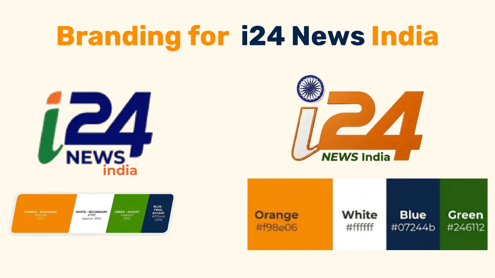

i24NEWS in India: from social listening to a brand and a campaign
A news channel based in Israel wanted to grow among English-speaking audiences, and India was the market with the most potential and the least attention. Across two courses and four stages we went from listening to comments in Indian media to our own survey, an insight, a sub-brand (i24 News India) and a campaign: “From Noise to Knowledge”.

The brief
i24NEWS presents itself as “the heart of the new Middle East”: a multiplatform channel in four languages that explains the whole region, not only Israel. It wanted to grow its English-speaking audience. India is a digital, politically engaged market with real interest in the Middle East for security, economic and energy reasons. There were three barriers: suspicion of bias because of the channel’s origin, the idea that BBC and CNN are enough, and news fatigue.


Swipe sideways or use the arrows. Tap a screenshot to enlarge it.
Social listening: what the comments on Indian media say
In a group of nine we read the public comments on three TV channels (Republic TV, CNN-News18, India Today), four newspapers (The Times of India, The Hindu, Hindustan Times, Indian Express), four digital-native outlets (Firstpost, The Wire, The Print, Newslaundry) and communities on Reddit and X. What we found about the Middle East: stances depend on the Indian political climate, support for Israel crosses with India’s own dispute with Pakistan, comments are more emotional than rational and are tied to religious beliefs. About the media: people do not criticize the outlet even when they disagree, they do not question the journalist’s authority, and side topics (sport, pop culture) add engagement.


Swipe sideways or use the arrows. Tap a screenshot to enlarge it.
The survey: 121 responses, 76 valid
With the hypotheses from the listening we built a questionnaire of about 40 questions in Fillout, with filters for age, language and location. Out of 121 responses, 76 were valid, half of them from people aged 25 to 34. India is not a news-avoiding market: 64% use social media to follow the news. About the Middle East, the strongest association is culture and history (24%), not conflict. What is missing in current coverage: clear explanations (45%), human stories (43%) and an Indian perspective (41%). The preferred format is long video (41%), followed by short video (25.6%). Conclusion: an open, non-polarized, globally oriented audience that asks for explanatory journalism in video.


Swipe sideways or use the arrows. Tap a screenshot to enlarge it.
The insight and the concept
Everything converges in a first-person sentence: “In a world full of opinions about the Middle East, I want to truly understand what’s happening, so I can form my own perspective”. The promise: “Understand for yourself”. And the concept that turns it into a campaign: “From Noise to Knowledge: i24 News Decoded for You”. The strategy is not to change all the channel’s content but to reframe it: a space dedicated to India, built from what already exists and connected to the English-language programming.


Swipe sideways or use the arrows. Tap a screenshot to enlarge it.
The sub-brand: i24 News India
A version of the logo in India’s colors, a system for social media, and a new feature in the app and on the site: “India Lens”, a layer that orders Middle East news by what matters to someone in Mumbai or Bangalore. The mockups follow the brand’s real visual language, one of the pieces of feedback we received midway.



Swipe sideways or use the arrows. Tap a screenshot to enlarge it.
Four pillars and three reframed programs
Four content pillars: Pocketbook Geopolitics (the Middle East versus your wallet: how an oil decision moves the price of fuel in India), Headline Decoded (three dry facts behind each headline), The Gulf–India Corridor (visas, work and the new Indian generation in Dubai and Riyadh) and The Explainer Blueprint (a glossary and a “who’s who” of the region). And three existing programs with a twist: “Middle East Now” starts each episode from an Indian reality; “Innov’Nation” moves from “Israel invented X” to “the cybersecurity protecting your bank app was developed here”; “The Rundown” adds an Indian co-host and an audio version for the two-hour commute.


Swipe sideways or use the arrows. Tap a screenshot to enlarge it.
How it changed with each round of feedback
The presentation went through three versions. The first was dark blue and opened with the creative. The feedback was clear: tell a story (brand, challenge, research, insight, promise, strategy and only then the concept), light background, a single typeface, more images than words, and on the billboard the logo and the line have to be the most visible thing. The billboard is the best summary of the process: from “Why Gulf tensions matter” to “Too much news, too little clarity” to the final one.


Swipe sideways or use the arrows. Tap a screenshot to enlarge it.

What I took away
That a campaign stands on what people say when nobody asks them. The social listening and the survey did not decorate the concept: they produced it. And that a hard round of feedback midway (tell the story in order, light background, bigger logo) is worth more than ten new slides.